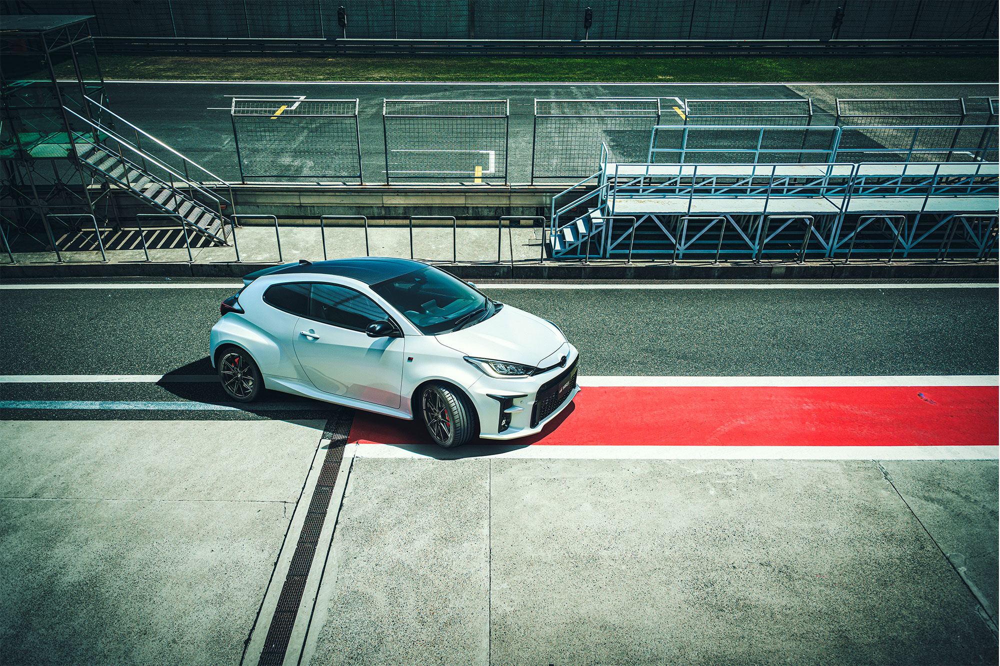

Ölmeye başlayan sektör ve sınıflar, ölen otomobil ruhu derken Toyota 2018’de sınırlı sayıda Yaris GRMN’i ortaya çıkarmış ve bizleri biraz olsun umutlandırmıştı. Uzun süre sıkıcı otomobillerden öteye geçmeyen Toyota, 90’lardaki günlerini hatırlamış olacaktı ki böyle bir hamle yapmıştı. Sonrasında yavaş yavaş üreticiler bu sınıftan otomobillerini çekerken Toyota da bir süre sessiz kaldı. Celica GT-Four’la başlattığı mirası rallide kazandığı zaferler ve özüne dönüş hamlesiyle taçlandıran Toyota, yapıştırdı cevabı: Yaris GR.
Küçük ve sorunsuz olmasıyla dünyanın dört bir yanında ağırlıklı olarak “kadın arabası” gözüyle görülen Yaris, artık standart haliyle daha sportif bir görünüme kavuşmuştu. Bunun daha da tehlikeli hali Yaris GR, normal bir performans otomobilinin tam tersi şekilde inşa edilmişti. Normalde bu tür otomobiller standart versiyonlarının daha güçlü hali olarak tasarlanırken Yaris GR, WRC otomobilinin ehlileştirilip caddeye salınmış hali olarak karşımıza çıktı. Bunu gönderinin sonundaki görselde ve GR-Four dört çeker sistemi ile de kanıtlayan Toyota, Yaris’i bu özel versiyonuyla diğer rakiplerinin de üstüne konumlandırmayı başarmıştı. Artık Fiesta ST, i20N veya Clio RS’i kendine rakip almıyordu, gerek performansıyla gerekse yapabildikleriyle üst sınıftaki otomobillere de sataşmayı ihmal etmiyordu.
Şirin tasarımının altında sinirli bir yaratık barındıran Yaris GR, maalesef ülkemizde tıpkı i20N gibi karaborsaya düşmüş durumda. Zaten sınırlı sayıda gelen de daha sınırlı sayıda insanın erişebileceği bu değerli otomobilin bu denli kıymetli olmasının sebebinin fabrika çıkış fiyatı ve mekanik altyapısıyla kalmasını isterdim.